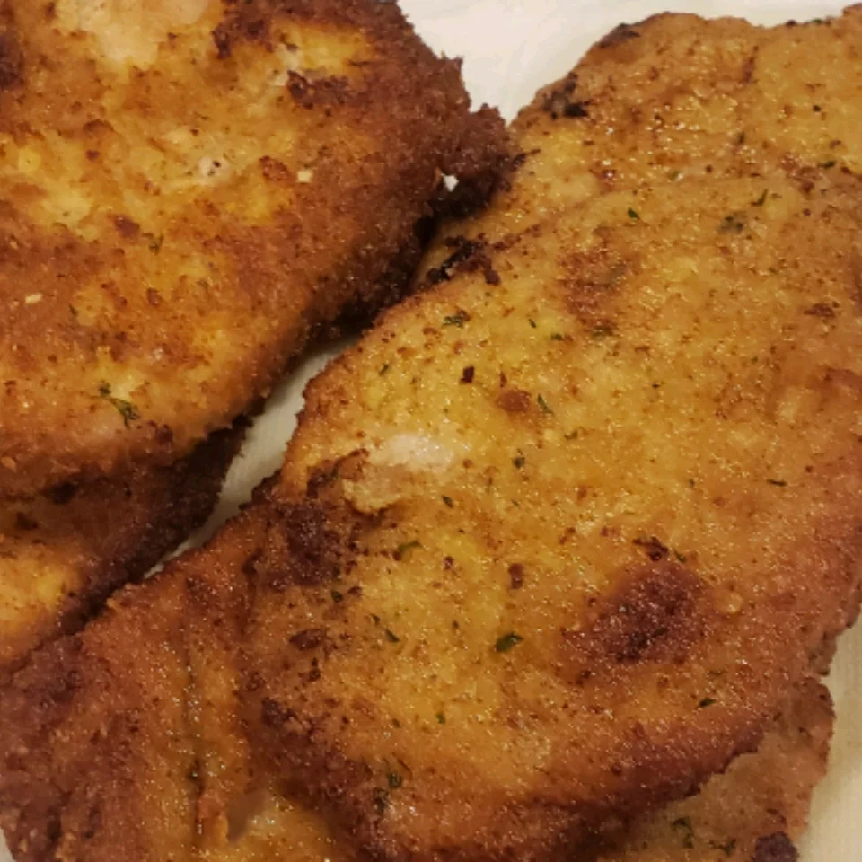

Jaeger Schnitzel

Description
This is wonderful. Breaded and fried cubed pork with mushrooms and hunter gravy over a bed of noodles. Serve with a salad and a hunk of thick crusty bread.
Ingredients
- 2 pounds boneless pork chops, cubed
- oil for frying
- 2 eggs, beaten
- plain bread crumbs
- 3 one ounce packages dry mushroom gravy mix
- 1 pound fresh mushrooms, coarsely chopped
- 1 sixteen ounce package dry egg noodles
Directions
- Pound out cubed pork, and cut in half.
- Heat oil in a large skillet or Dutch oven over medium heat. Dip pork in egg, then bread crumbs, and place in hot oil. Cook, turning, until golden brown. Remove to a warm plate.
- Prepare gravy mix according to package directions. Stir in mushrooms, and cook with gravy.
- Meanwhile, bring a large pot of lightly salted water to a boil. Add the egg noodles, and cook until al dente, about 8 to 10 minutes; drain.
- Serve pork over noodles and smother with gravy.